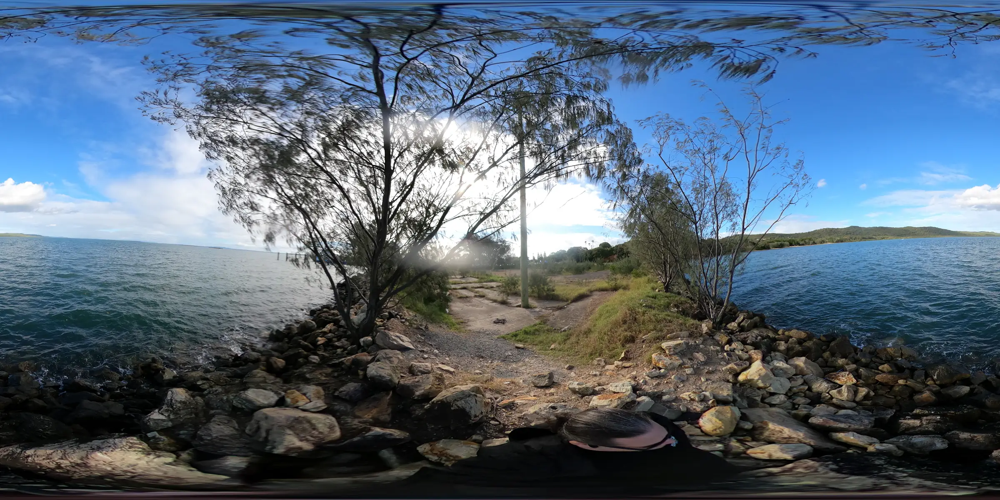
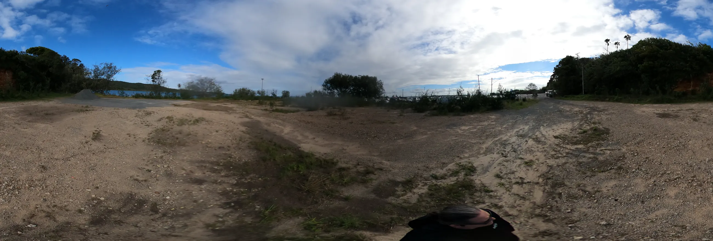

See the place
Open the actual site photographs and consultation board.
 Sandworm Subterranean SystemsMoreton Bay research & development
Sandworm Subterranean SystemsMoreton Bay research & developmentChapter 03 / 17 · Gumpi business case
A better way to get around town, with both ferry terminals, less pressure on waterfront parking and all-weather walking.
Transport on Minjerribah only. Both ferry terminals retained.
Anyone who has tried to catch a ferry from Gumpi knows the drill: find a park, carry your bags and hope the weather plays nice. Moving the Straddie Flyer from One Mile to Junner Street wouldn't magically make the parked cars disappear.
The Gumpi Town Tunnel Loop is Sandworm's proposed first infrastructure project on Minjerribah. Keep both terminals running, create park-and-ride away from the busy waterfront and give people a way to walk or ride around town underneath the sand.


An easier trip to the ferry
Imagine arriving with your shopping, a pram, a wheelchair or a suitcase, without having to walk through the rain or find another car park. Walking is a genuine option, not an afterthought.
Possible stops include One Mile, Junner Street, the town centre, QUAMPI, Ballow Road sports facilities, schools, health services and residential areas. The route and parking locations still need to be worked out.
Check parking duration, travel time, demand, accessibility, lighting, ventilation, safe separation of pedestrians and vehicles, emergency exits, flooding, security, land and cultural heritage. Everyday weather protection is the aim; extreme events need separate safety checks.
Sand from the loop could help build the town
Rather than paying to remove every load, investigate making quick-fit blocks, tiles, shelters, drainage parts, solar paving and other useful pieces. Connect the loop to local energy storage and computing as the research develops.
material and energy programme · Explore the original material ledger
People have raised concerns about keeping the Straddie Flyer at One Mile, parking, choice of ferry operator and access in bad weather. A town loop offers another way of making the two terminals work together without combining them.
How the debate has evolved
The 2024 public transport strategy considered moving regular passenger services to Junner Street. The June 2026 council submission was amended but still discussed accommodating a potential move from One Mile. An October response said council had no endorsed position on consolidation. This is not a permanent guarantee that One Mile will remain open.
Council submissions and advocacy · Council parking consultation outcome · June debate reporting · October RTI reporting
Public Transport Strategy 2024, priority 4 and action 4.3 · 2023 consultation summary, p. 6 · Council parking in Dunwich · Gumpi Master Plan 2023 · Current terminal upgrade
The SEQ City Deal commits $41 million to the Junner Street ferry terminal upgrade. TMR's September 2026 update describes a project still in planning, with a business case expected in late 2026 and broader planning in 2027. The official concept includes a dual-berth pontoon, bus links, shelter, parking and foreshore access.


For comparison, the four SMBI terminals completed in October 2023 cost $48.6 million ($31.5 million from Queensland and $17.1 million from council). That's a useful reference for marine works, not a tunnel quote.
SEQ City Deal investment ↗ · TMR project and concept status ↗ · Gumpi Master Plan context ↗
TMR engineering forum: SMBI terminal delivery ↗ · Queensland 2023 delivery awards ↗
The Gumpi Ferry Terminal Open Data Lab already has a map of actual 360-degree site photographs and consultation material. The next step is a digital model from real measurements so people can compare ideas before anything is built.
Open the actual site photographs and consultation board.
Bring together drone imagery, 3D scans, surveys, terrain and water depths.
Use the model to test routes, parking and entrances.
Photographs help us understand the place. Engineering needs accurate surveys.
Compare each option against parking, walking distance, travel time, accessibility, cost, safety, impacts on Country and local jobs.
| Option | Scope |
|---|---|
| Reference option | Current Junner Street upgrade and existing ferry operations. |
| Consolidated terminal | Test the effects of moving regular passenger operations to Junner Street, including parking, all-weather reliability and bus integration. |
| Two terminals with surface park-and-ride | Benchmark surface shuttle and active transport improvements, with both passenger ferries retained. |
| Two terminals with Gumpi Town Tunnel Loop | Investigate autonomous subterranean mobility, dispersed parking, connected town destinations and potential shared utility interfaces. |
| Evidence to collect | Business-case use |
|---|---|
| Simultaneous vehicle counts at both terminals, by location, day and time | Establish combined demand, overflow and peak conditions without double counting. |
| Parking duration and turnover | Separate daily commuters, long-stay storage, residents, visitors, accessible bays and short-stay transfers. |
| Ferry arrivals, passenger origins and destinations | Model travel demand, service frequency and connections to the wider town. |
| Park-and-ride location and capacity options | Test demand shifts, walking and shuttle access, land and lifecycle costs. |
| Surface traffic, environmental and heritage impacts | Compare changes in parking spillover, congestion, public space, accessibility and impacts on Country. |
Count cars at both terminals together on weekdays, weekends and school holidays. Check parking duration and where people want to go. The local observation of 300+ cars is not yet a measured demand for new bays. The loop needs its own budget, separate from the $41 million.
| Option | Scope | Key test |
|---|---|---|
| A: reference case | Official surface and marine upgrade | Comparable passenger outcomes, cost and schedule |
| B: future-ready interfaces | Reserve utility interfaces and space for future access where warranted | Incremental cost versus avoided future disruption |
| C: separate research pilot | Offsite wet-sand test and later approved demonstrator | Evidence before any terminal excavation |
| D: mature network option | Utility spine, freight and autonomous mobility links, independent emergency infrastructure | Only after geology, approvals, safety and demand are proven |
Work with Quandamooka rights holders, ferry operators, council, TMR and local residents on future investigations.
The loop could be the first step towards reaching Amity and Point Lookout, then appropriate visitor destinations on Minjerribah. Access to culturally significant places is for their custodians to decide.
The on-island growth path
Accessible autonomous rides for residents, visitors and luggage.
Local deliveries, supplies and maintenance equipment.
Separate smaller tunnels for looking after pipes and cables.
The passenger tunnels have not been sized. The 1 to 1.5 metre idea is for utility tunnels, not passenger vehicles.
Two tracks from Straddie Fun, the fifth album by Luke Catalyst Nathan Hayes as i C. Infinity, written on 6 June 2026 following the Gumpi consultation. Humour and protest music turn the demand for better evidence and local capability into a public conversation.
14:53 · V5.5
The more reflective track asks for LiDAR, survey data and a site model that locals, Elders, students and builders can actually use. It connects parking, wildlife, business opportunities and skills that stay on the island.
Where's the point cloud, where's the baseline?
Show us what the artists can't
16:49 · V5.5
The sharper satirical track challenges closed project data and lost local capability. It brings together robotic fabrication, geopolymer interlocks, sand batteries, subterranean transport, reef energy and ready SET Co-op.
Public dollars must create more local skills
that’s the law of tidal maths, and a fair go bro
The songs tell the story with a bit of Straddie humour. The practical ask is public-safe open data, a fair comparison of options and skills that stay on the island.
Getting around Straddie · Make things from the sand · Keep the benefits local.